Flight Check-In Kiosk
View the Interactive Prototype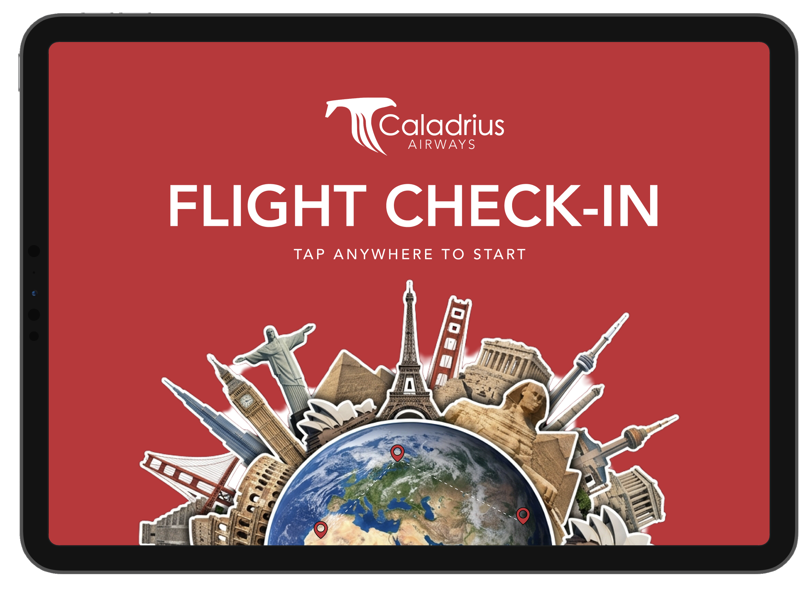
Project Overview
This three-week project aimed to design an interactive kiosk aiding users in checking in for their flight, including steps allowing them to adjust luggage and print their boarding pass. This project included creating a user flow and conducting user testing to improve user experience when interacting with the interface.
Design Challenge
Create a kiosk that walks the user through the check-in process while providing clear instructions on what to do and where the user is in the process.
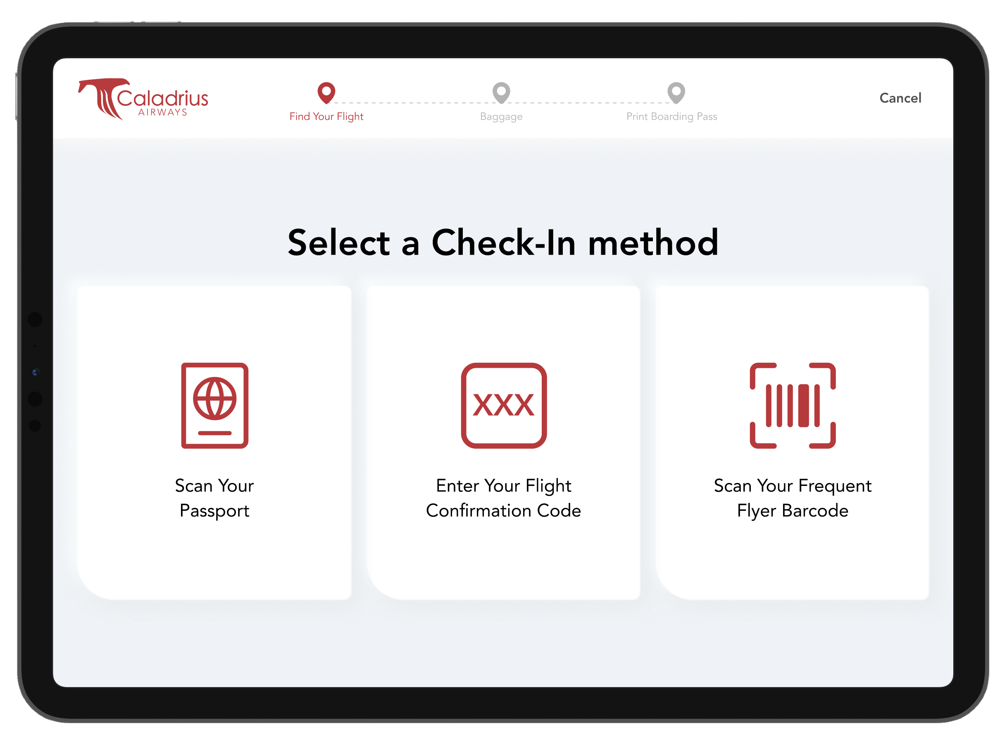
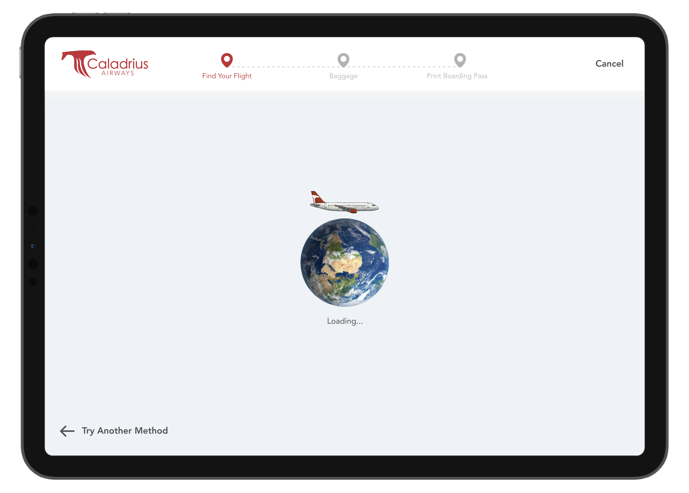
Approach
This project began by listing out the specific steps my user would need to take to check in for their flight at the airport: locate the reservation, adjust luggage, and print their boarding pass. This list guided me as I created a user flow, outlining the subtasks within each step and the alternate paths a user could take through the kiosk.
Then, I drew sketches and iterated through low-fidelity prototypes. As I brought the design to mid-fidelity, I conducted user testing and identified issues, including adding clear instructions to tap to start over on the success screen and text on the loading screen to clearly indicate that the kiosk was loading the flight information.
Explore More Screens
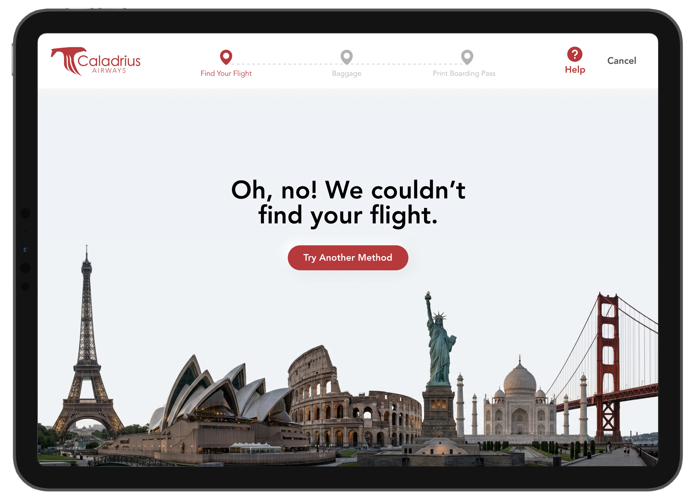
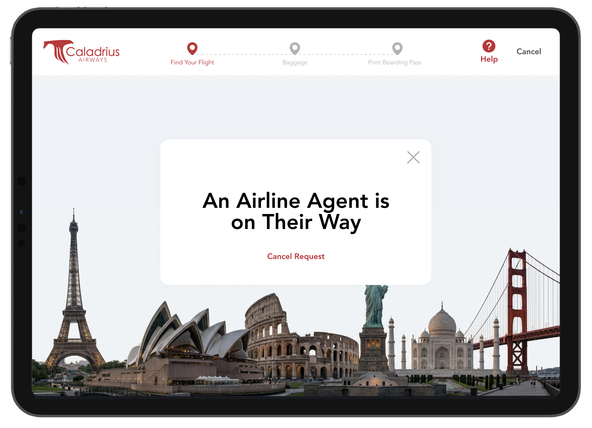
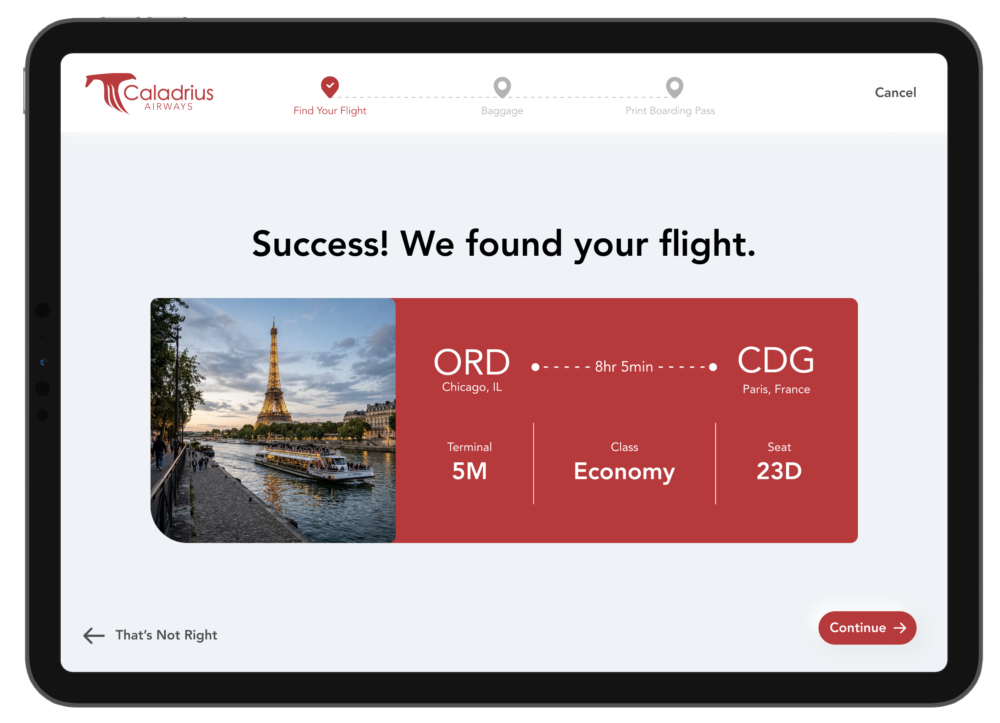
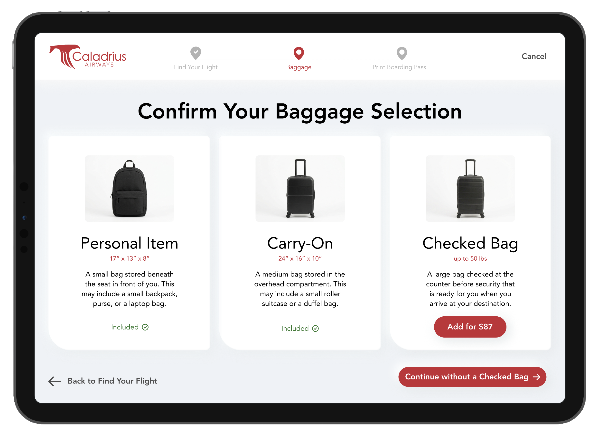
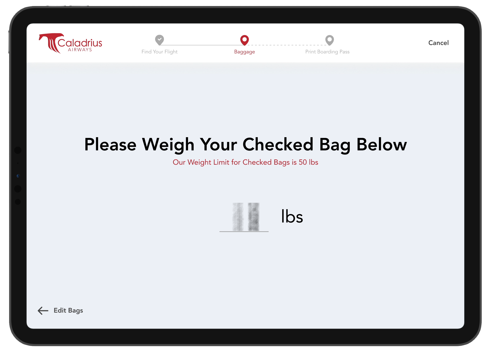
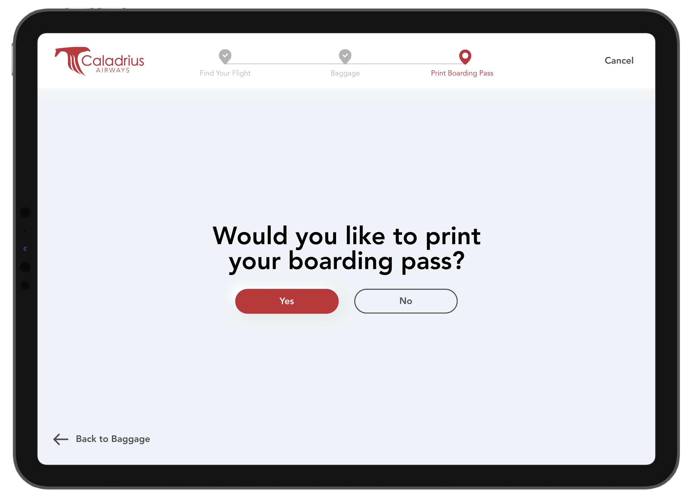
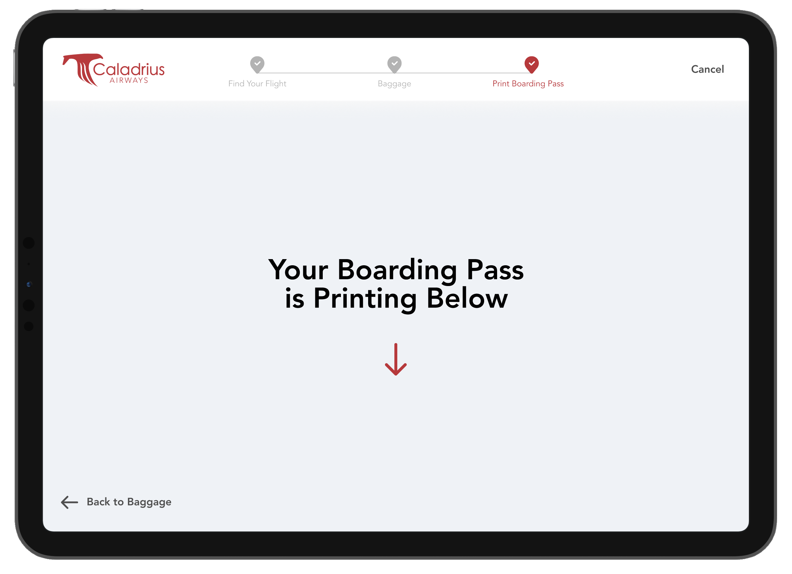
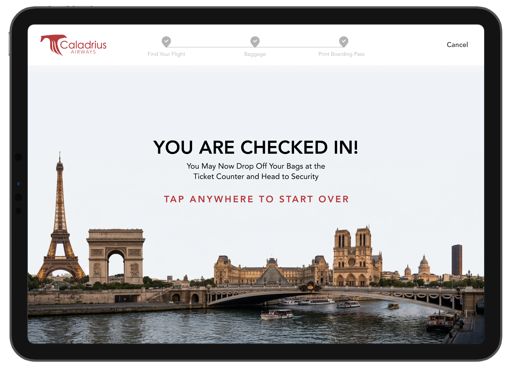
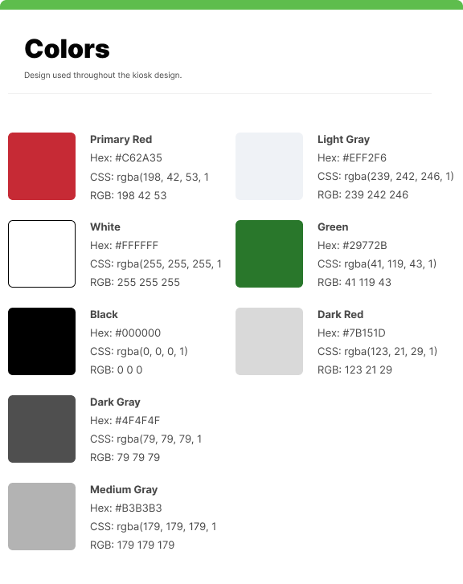
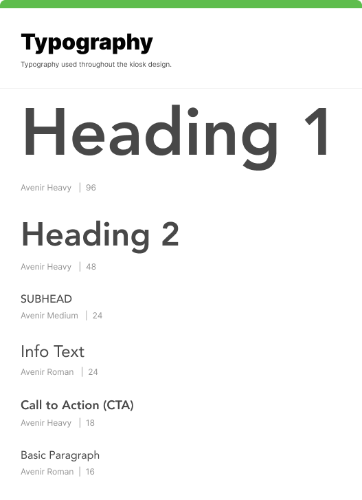
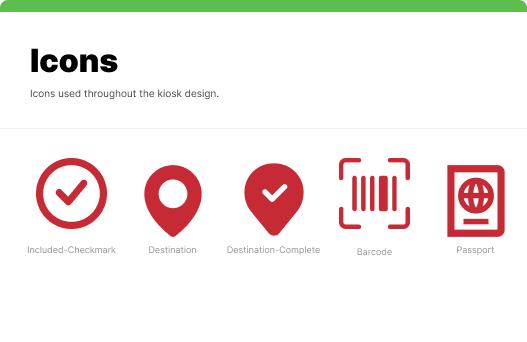
Outcome
I created a high-fidelity kiosk prototype that incorporated user-testing findings. Additionally, I prepared a front-end/development handoff presentation and developer notes that documented how to build the kiosk, including empty, failed, and loading states.
View the Interactive Prototype